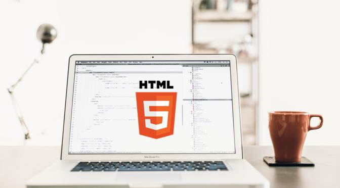

HTML Fundamentals
تعلم إنشاء صفحات الويب باستخدام HTML.
- المستوى
- مبتدئ
- المدة
- 4 أسابيع
متطلبات الكورس
- استخدام أساسي للكمبيوتر.
- متصفح ويب حديث.
تعلم إنشاء صفحات الويب باستخدام HTML.
تعلم تنسيق صفحات الويب باستخدام CSS.

لا، الكورسات المخصصة للمبتدئين تبدأ من الأساسيات.
أحضر جهازك الشخصي وثبّت VS Code ومتصفحاً حديثاً.